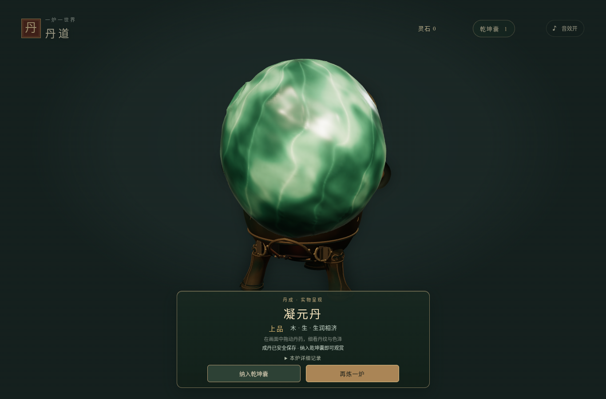
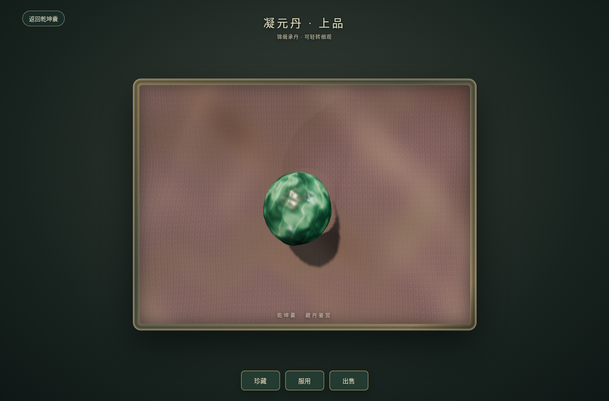
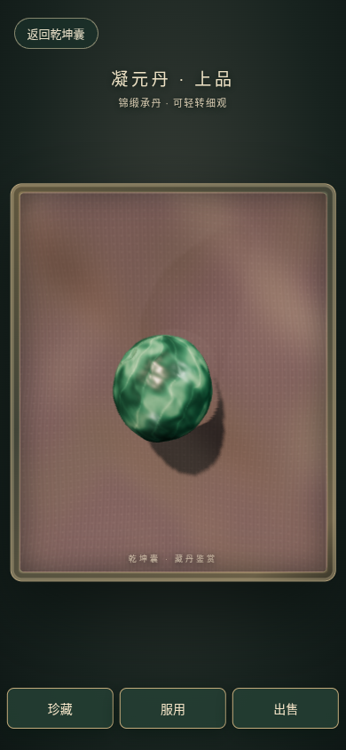

《丹道》第二轮整改 · 实机画面
真实游戏浏览器截图，可对照检查丹药居中、纳入乾坤囊与锦缎收藏视图。 打开新试玩版 · 打开上一轮对比版

公网 Chrome · WebGL2 · 实际炼出上品凝元丹

公网 Chrome · 经“纳入乾坤囊”后进入

此图使用预先准备的本地丹药存档夹具验证布局，不是实体手机 GPU 实测
说明：技术回归通过不代表美术最终签收。此页供视觉验收，原有正式预览不变。
真实游戏浏览器截图，可对照检查丹药居中、纳入乾坤囊与锦缎收藏视图。 打开新试玩版 · 打开上一轮对比版



说明：技术回归通过不代表美术最终签收。此页供视觉验收，原有正式预览不变。